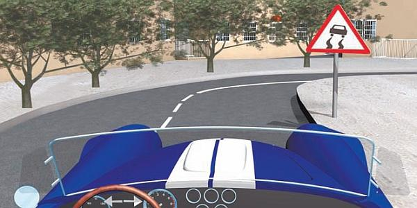
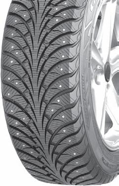
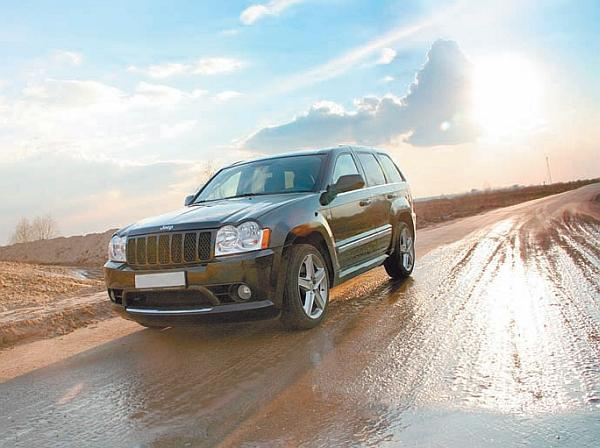
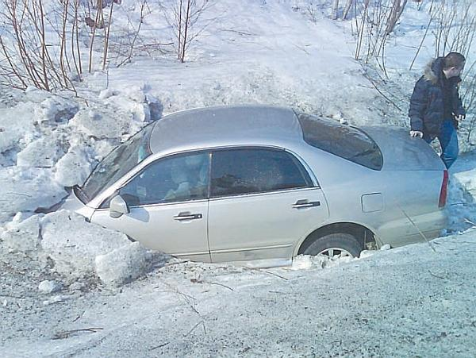
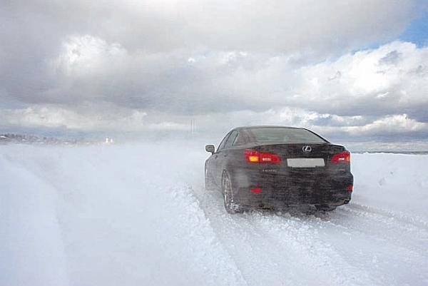

Движение по скользкой дороге.
Результаты многочисленных исследований говорят о том, что примерно треть всех ДТП происходит из-за недостаточного сцепления колес автомобиля с дорожным покрытием. Обычно это мокрые, занесенные снегом или покрытые льдом дороги. Но учтите, что плохое сцепление колес с дорогой возможно при большом износе шин или при использовании «обуви не по сезону» (например, при езде зимой на летней резине).
Из-за недостаточного сцепления колеса скользят по дорожному покрытию. Это приводит к сильному снижению эффективности торможения, кроме того, машина легко может уйти в занос, в результате чего контроль над ней почти полностью утрачивается (рис. 5.3).

Рис. 5.3. Увидев этот знак, сбросьте скорость
Но шины – это то, что полностью зависит от водителя, так как перед наступлением соответствующего сезона или при высоком износе всегда можно их поменять (рис. 5.4). А о том, как вести себя на опасных участках дорог, пойдет речь далее.

Рис. 5.4. На зимней дороге эффективна шипованная резина
Новички часто не придают особого значения тому, что на дороге имеются пятна масла либо иных нефтепродуктов, и совершенно напрасно, ведь такая дорога независимо от сезона и текущих погодных условий все время будет скользкой. То же самое относится к дорогам, недавно покрытым новым асфальтом (особенно в жару). Поэтому старайтесь не ездить по проезжей части, на которой есть пятна нефтепродуктов, а если без этого не обойтись, не заезжайте на эти пятна, чтобы избежать их попадания на резину.
При движении по проезжей части, на поверхности которой имеется талый лед, двигайтесь по полосам с более интенсивным движением, поскольку там лед быстрее разбивается и исчезает.
Предельную осторожность в холодный сезон необходимо соблюдать при проезде через мосты и путепроводы: на них лед появляется раньше, нежели на обычной дороге, а сходит – позже. Иногда лед на мостах и путепроводах есть даже тогда, когда его больше нигде нет.
СОВЕТ
При движении по обледенелой дороге (рис. 5.5) нельзя резко поворачивать, а также интенсивно работать с педалями газа и тормоза. Стремитесь ехать по прямой, не маневрируйте без особой нужды (например, полосу движения меняйте только в крайнем случае). Обгон на скользкой дороге запрещен, так как может привести к серьезному дорожно-транспортному происшествию.

Рис. 5.5. Обледенелая дорога особенно опасна
Если на проезжей части имеются песчаные и снежные заносы – старайтесь на них не заезжать: это может быть опасно. Конечно, во всем должен быть здравый смысл. Не нужно, увидев занос, в панике сворачивать в кювет или на полосу встречного движения, достаточно проехать его на невысокой скорости.
Если вы припарковались на скользком месте, учтите, что начало движения может быть затруднено. Перед тем как тронуться с места, выровняйте колеса, запустите мотор, плавно увеличьте подачу топлива и некоторое время удерживайте педаль газа в одном положении. Иногда бывает полезно подложить что-нибудь (обычно доску) под ведущие колеса – это поможет автомобилю сдвинуться с места. Знайте, что начинать движение на скользкой дороге следует медленно, иначе вы либо забуксуете, либо автомобиль развернет (рис. 5.6).

Рис. 5.6. Итог лихачества на зимней дороге
Двигаться по скользкой дороге нужно на небольшой скорости, соблюдая при этом увеличенную дистанцию спереди и по сторонам. Необходимость увеличения дистанции обусловлена тем, что на скользкой дороге сильно возрастает тормозной путь любого транспортного средства. Если требуется изменить скорость движения, выполняйте это максимально плавно, мягко работая педалями газа или тормоза.
При приближении по скользкой дороге к перекресткам или поворотам заблаговременно снижайте скорость. Перекрестки в таких случаях очень опасны по двум причинам: во-первых, дорожное покрытие перед перекрестком, как правило, особенно скользкое из-за постоянного в этом месте торможения автомобилей, а во-вторых, есть немалая вероятность столкновения с другими транспортными средствами, водители которых не сумели заранее определить безопасную скорость движения.
Особо рассмотрим, как правильно тормозить на скользком дорожном покрытии. Категорически запрещено тормозить резко, с блокировкой колес (хотя именно такое желание инстинктивно возникает при обнаружении опасности), в этом случае машину занесет и она потеряет управляемость (рис. 5.7). Применяйте торможение двигателем или прерывистое торможение. Что же это за приемы?

Рис. 5.7. Езда в таких условиях – настоящее испытание
Такое понятие, как «торможение двигателем», прекрасно известно опытным водителям. Суть его в том, что водитель останавливает транспортное средство, последовательно переходя на пониженные передачи (с пятой – на четвертую и т. д.), и только для полной остановки (когда машина едет с минимальной скоростью) применяются тормоза. Следовательно, транспортное средство замедляет скорость за счет двигателя, понижающего передаваемый на ведущие колеса крутящий момент при каждом переходе на пониженную передачу. Главным достоинством этого приема является плавное и равномерное уменьшение скорости, без блокировки колес, что сводит к минимуму возможность заноса.
При прерывистом торможении водитель снижает скорость короткими нажатиями на педаль тормоза, без блокировки колес (по принципу «нажал – отпустил»). Если при торможении требуется немного изменить направление движения транспортного средства с помощью руля, это можно делать лишь при отпущенной педали тормоза, когда колеса машины свободно вращаются.